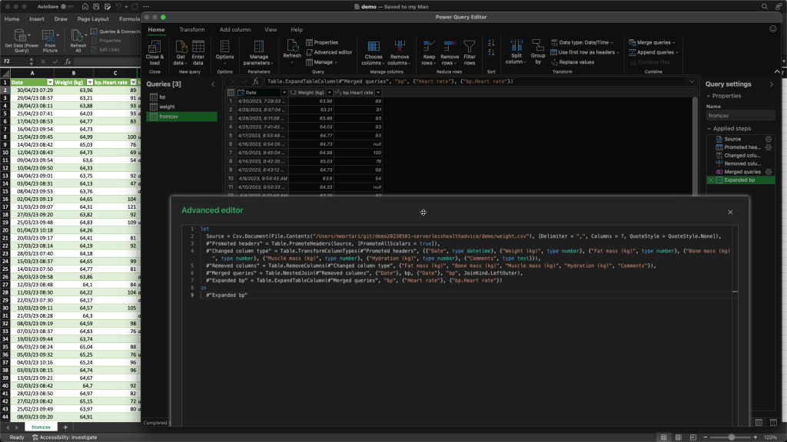
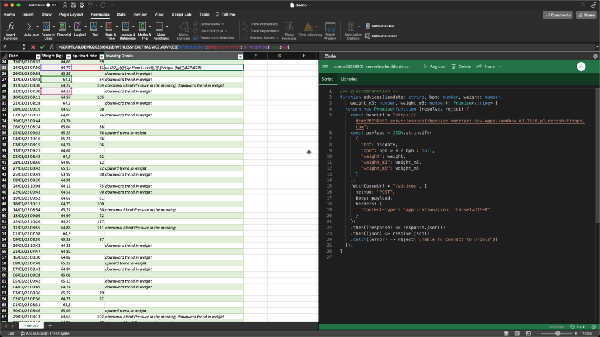
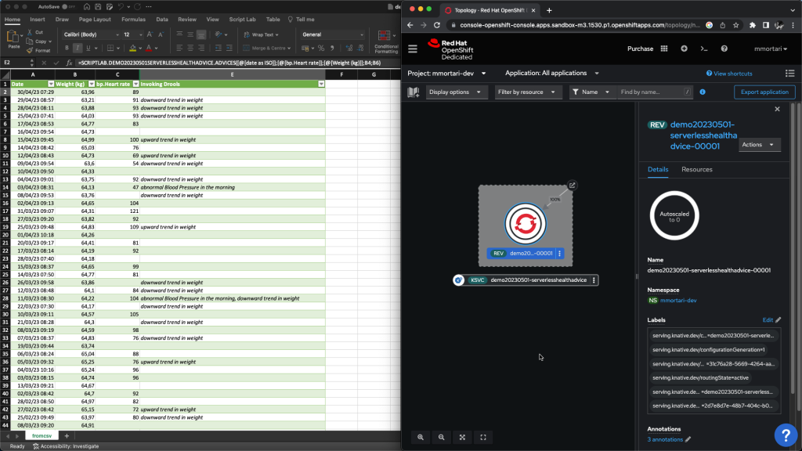
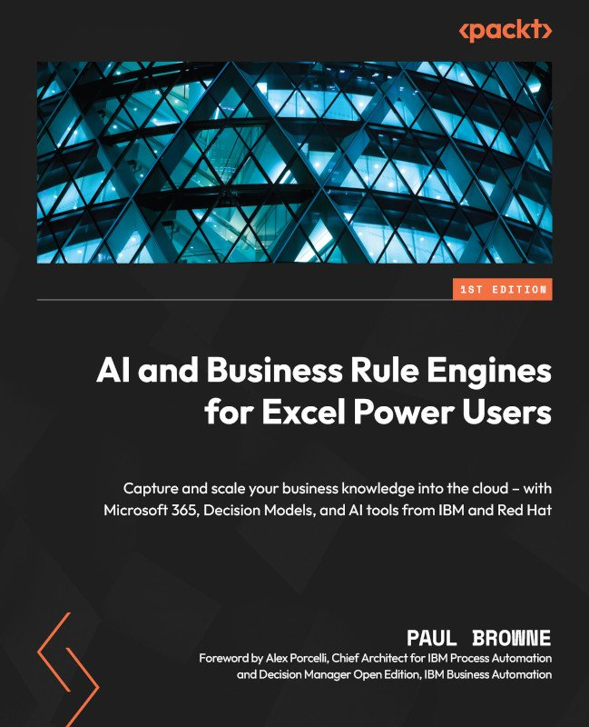

Integrate Excel with Drools on OpenShift with Knative and Quarkus!
In this blog post I want to share the results of a technical exploration in bridging, bringing together and integrating a diverse set of technologies and platforms, ranging from classic spreadsheet applications (Excel) to serverless platforms (Knative on OpenShift) to technical rules executed by our rule engine Drools!
Introduction
This content has been inspired by a great book I had the opportunity to read recently (see more below). So I wanted to take on a personal challenge to build a novel example, based on some of the powerful techniques presented in the book, and then add some more, going beyond. Specifically, I wanted to be able to invoke some custom DRL rule evaluation in a serverless way, by connecting Excel with my Quarkus-based Drools application served by Knative on OpenShift.
As I wanted a use-case with plenty of realistic data for this technical exploration, I decided to focus my attention on the IoT (Internet of Things) which is another factor revolutionizing the way we live. If I think about the diverse ranges of devices available nowadays, from smart homes to connected cars, these IoT devices in my opinion are changing not only the way we interact with our surroundings… when used sapiently, I believe they can really augment and improve our lives. However, IoT is more than just internet-connected devices! To me, it is also about leveraging various technologies and platforms to create intelligent systems that can automate processes, optimize, and improve our decision-making.
More specifically, I wanted to try processing the technical data collected through my smart scale and smart watch, collecting into Excel, and then processing it via the intelligent application described above. This will give us the opportunity to highlight some of the benefits of the integration scope mentioned in the preamble, and a perspective on how these techniques can help your organization or benefit your own use-cases! Before wrapping up, I will share my review of the mentioned book.
Serverless Drools
Let’s dive into the DRL rules:
rule R1
when
$r : MeasRecord( morning == true, bpm < 60 || bpm > 100 )
then
insert(new Advice("abnormal Blood Pressure in the morning", 100));
end
rule R2
when
$r : MeasRecord( weight < weight_m3, weight_m3 < weight_m5 )
then
insert(new Advice("downward trend in weight"));
end
rule R3
when
$r : MeasRecord( weight > weight_m3, weight_m3 > weight_m5 )
then
insert(new Advice("upward trend in weight"));
endHere, I want to define some rules which will advise me if specific data measurement is observed. These rules in my opinion are very naturally readable in spite of the technical nature of DRL: I want to emit an advice in case of abnormal bpm, or when there is a specific trend in weight compared to T-3D or T-5D (I take these measurements once each day).
Similarly, you could think of analogous DRL rules for your IoT use-case, reacting to events and measurement signals from your sensors or devices!
In order to make this intelligent application efficiently consumable as a serverless decision service, I decided to experiment with a number of capabilities of Drools v8 and Quarkus, starting by making use of the Drools v8 drools-drl-quarkus-extension.
Further, in order for the REST API in my Quarkus application to be easily consumable from external, JavaScript-based services and applications, I needed to enable CORS. A word of warning is important here with regards to the CORS “origin”, that should be tailored to your production use case (as noted in the documentation); if you decide to build on this example, you might want to consider for your allow-list to be specific to the expected origin of your clients (in my case Swagger UI from OpenShift and Excel ScriptLabs, but you might want to extend to the servers of your Office Add-In, etc):
quarkus.http.cors=true
# note: check settings for PROD:
quarkus.http.cors.origins=/.*\\.azureedge\\.net/,/.*\\.openshiftapps\\.com/
quarkus.swagger-ui.always-include=true
quarkus.kubernetes.deployment-target=knative
quarkus.container-image.registry=quay.io
quarkus.container-image.group=mmortari
quarkus.container-image.builder=jibIn addition to the CORS configuration, it’s pretty easy to influence the behavior of the final resulting Quarkus application, specifically:
- I want the Swagger UI to be included in the deployed artifact
- it will be a Knative Service, so to allow the serveless use-case, including auto-scale to zero
- I find easier to publish my container images on Quay.io, to be picked up by my OpenShift instance
- to build the container image, I typically use JIB
These configuration steps are similar to what described in a previous blog post, showcasing how it’s really easy to build a Serverless application with Drools and Quarkus! Be sure to check it out if you missed it.😉
Excel integration
Here comes the very unusual part, at least for me, where I wanted to apply some of the techniques from the book and then explore even further.🙂
First, I collected all the data from my IoT devices; personally I own a couple of smart devices from Withings, as I appreciate they allow you to easily export an archive of your data, in CSV format: perfect for Excel! Similarly, you might consider expanding on this example by directly interacting instead with their APIs.
The archive exports a ZIP of a collection of CSV files; for my challenge I indeed decided to focus on bpm and weight measurements, which are actually in 2 separate files. To combine this data into a single table I’ve used a Power Query, one of the capabilities presented in the book, in order to connect to the CSV files as data sources and merge them seamlessly.
The merge result is something similar to:

Then, I have defined a custom function in Excel; you can find more information about this capability on Microsoft’s website as it is one of the most powerful mechanisms available to extend Excel with custom behavior.
I should highlight that in the book, you will find many, many other mechanisms to perform an invocation from your Excel sheets to a remote Drools application running on OpenShift; personally, I opted to develop a custom function in order to try something new but also sophisticated, which could be bundled later as a fully-fledged Office Add-In; but the book indeed guides you through many more (and often easier) mechanisms!
One of the reasons I loved that read so much, is that it offered a wide portfolio of options to choose from when it comes to integrating Excel with Drools.
My final custom Excel function looks like this:
/** @CustomFunction */
function advices(isodate: string, bpm: number, weight: number,
weight_m3: number, weight_m5: number): Promise<string> {
return new Promise(function (resolve, reject) {
const baseUrl = "https://(...).openshiftapps.com";
const payload = JSON.stringify(
{
"ts": isodate,
"bpm": bpm > 0 ? bpm : null,
"weight": weight,
"weight_m3": weight_m3,
"weight_m5": weight_m5
}
);
fetch(baseUrl + "/advices", {
method: "POST",
body: payload,
headers: {
"Content-type": "application/json; charset=UTF-8"
}
})
.then((response) => response.json())
.then((json) => resolve(json))
.catch((error) => reject("unable to connect to Drools"))
});
}…and it works like a charm!
The custom function is invoked by a very simple Excel formula, as one would easily expect:

It is also to be noted, again as expected, that when the formulas has been computed for the entire worksheet, the backend Knative service will automatically scale back to zero:

This is super helpful only to consume computing resources when needed, in this case when some Excel worksheet needs to (re-)calculate its formulas!
As the final and most important result, we can appreciate the rules processing the data and producing the advice in our Excel file, as defined in the DRL.
I believe combining Excel custom and extended behaviors with a serverless backend is truly a powerful combination! Thankfully integrating Quarkus and Drools and deploying our app on OpenShift with Knative is super easy as we’ve seen in this post. I hope this atypical blog post tickles your curiosity on how to integrate Excel or similarly other spreadsheet platforms; if you are interested to know more, I warmly invite you to check out this book…
Book review: Business Rule Engines and AI for Excel Power Users

Title: Business Rule Engines and AI for Excel Power Users: Capture and scale your business knowledge into the cloud – with Microsoft 365, Decision Models, and AI tools from IBM and Red Hat
Author: Paul Browne
ISBN: 9781804619544 (ISBN10: 180461954X)
I believe this book is an excellent guide for both software developers and business analysts seeking to scale the automation of their business knowledge into the cloud. It provides an in-depth analysis of how decision models and semantic rules can be combined with other AI models, to solve some of the inherent limitations of Excel –which is an omnipresent tool in every business and industry sector. The book introduces readers to industry-standard open source Drools rule engine and Kogito, and how these can be linked with many of Microsoft’s tools.
Paul presents very easy-to-follow examples to teach readers how to author sophisticated decision models, how to develop decision services in order to solve current business challenges using AI (both ML and symbolic AI), and how to combine rules with workflows to deploy a cloud-based solution. The book also covers advanced modeling using the Decision Model and Notation (DMN) open standard and related testing tools.
As a reader of this blog, I assume you are already familiar with some of the KIE projects, so you might be tempted to jump straight into reading from Chapter 6 onwards; but my recommendation would be to make sure to revisit the initial chapters nevertheless, especially Chapters 1-2, since they will equip you with important considerations when evaluating the adoption of the powerful techniques presented in this book in your organization. It is also to be noted that while specific to Microsoft tools, the techniques presented in this book (and this inspired blog post) can very likely be analogously applied using other software provider platforms and other hyperscalers!
Conclusion
I hope this blog post intrigued you to check out this new book and to explore more integration opportunities of Drools with other platforms and tools!
How are you planning to integrate Drools for your next use-case?
Let us know in the comments section below!